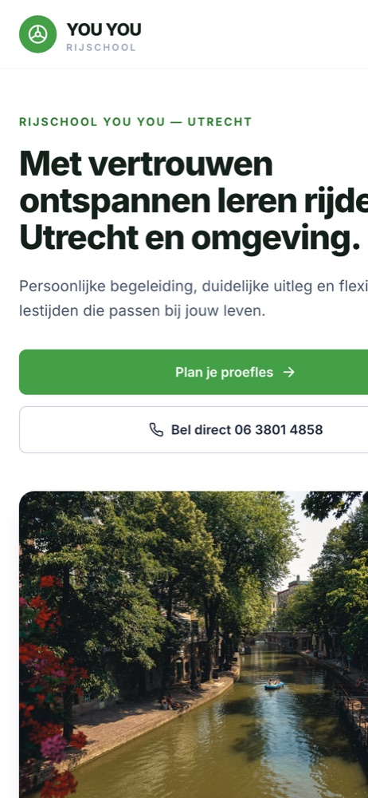

Rijschool · Utrecht
Rijschool YOU YOU
Een frisse, vertrouwenwekkende site met online proefles-aanvraag, heldere tarieven en pagina's per opleiding. Van gedateerd naar modern, mobiel-first.
Webdesign
Development
Mobiel-first
Bekijk de live site